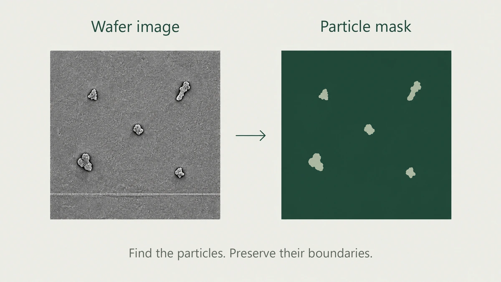

Tiny-particle wafer segmentation
Structure-aware segmentation for tiny-particle wafer inspection, bringing together boundary information, local complexity, and a compact student model.
Inside the work
The challenge. Preserve fine structural detail while keeping a vision model compact enough for high-throughput inspection.
The approach. A teacher–student pipeline that uses boundary salience, structural complexity, and local feature variation to guide learning.
The result. A 7 percentage-point mIoU improvement to 80% in internal validation of the prototype.
About the cover. The cover illustrates image-to-mask segmentation; it is not a KLA inspection sample or model output.